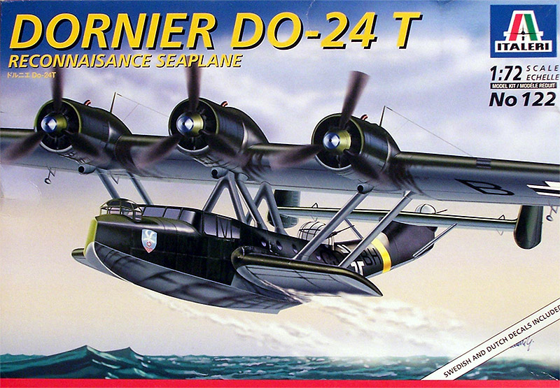
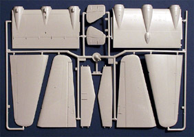
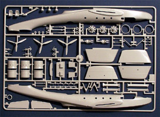
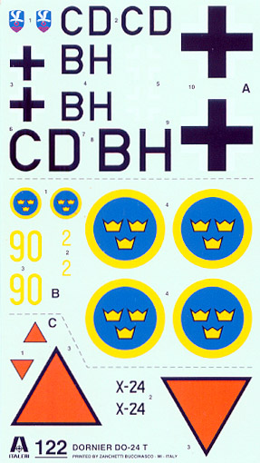

{kind=link}
{kind=link}
{kind=link}


Italeri 1/72 Dornier Do-24 T

Kit #122 Collector’s Market Value $18.00
Images and text Copyright © 2005 by Matt Swan
Developmental Background
In 1934 the Dutch Navy started an investigation into a successor for the aging Dornier Wal flying boats to patrol the vastness of the Dutch Indies. Dutch Navy officer 2nd class C. Sanders drew up the requirements of the successor of the Wal. The new plane had to be bigger, equipped with three engines, none of these to use pusher propellers, a maximum speed of 315 km/h, be of an all-metal construction and comfortable enough for long distances. The Wal had established Dornier as a financial success in the aviation industry and the Do-18 had confirmed the developmental ability of the basic design. Looking at the aircraft the similarity in wing, hull and sponson design is obvious.
Dornier was able to make an offer and on August 6th 1936 the first contract was signed for the delivery of 6 flying boats to the Dutch Navy, designated Do-24. The German rebuild was in full swing and the RLM was not willing to make any production capacity available for the Dutch Do-24's. As a result of this economic and political situation the first order was placed via Dornier’s post World War One facility, Swiss Aero-Metall A.G. in Zurich. Powered by three 600hp Junkers Jumo 205C diesel engines, four prototypes were built, two for the Dutch and two for the RLM and so began a series of aircraft that would remain operational in some manner into the twenty-first century.
Do-24s were the most successful flying boats in Germany during the Second World War and were operated as long-range reconnaissance, transport and rescue aircraft in the Mediterranean, Dutch East Indies and Scandinavia. The aircraft featured a wide shallow fuselage with the engines mounted on a broad chord wing mounted above the fuselage with side sponsons at the water line. By 1940 11 aircraft had been completed and 26 more were under construction. After Germany invaded the Netherlands production continued for the Luftwaffe as well as being put into production with the Potez-CAMS factory at Sartrouville in 1941. The Luftwaffe received 170 airframes from Holland and a further 48 from France. After the war an additional 20 aircraft were built and the type remained in service until 1955 when most remaining aircraft were sold to Spain. In 2003 Seair of the Philippines purchased a Do-24TT from Spain, reconditioned the aircraft and operates it on tourist routes between the islands. During the 1980s The Dornier Company manufactured the Do-24ATT, which is a turbo prop version of the same aircraft, and that unit still operates to this day.
The Kit


The kit arrives in a convention top opening box with good eye-catching artwork. Opening the box we are greeted with three sprues of parts, two large sheets done in a high pressure injection process with light gray plastic and a single medium sized sprue of clear parts. The first thing that really catches the eye is that long banana shaped fuselage. It has a nice smooth finish and finely engraved panel lines. The access hatches feature deeper panel lines to help distinguish them. The basic panel lines are so fine that I don’t think they will be able to hold a wash well. On the plus side of things they are pretty close to scale. I think panel line pre-shading would be the best way to approach this when it comes to painting. Keep in mind that you can click on the two images at the right to view larger pictures.
The main wing, which comes as a six piece assembly, the tail surfaces and the sponsons all show these same fine lines that the fuselage has. The elevator comes as a separate piece but all other flight control surfaces are molded in the neutral position. The interior is fairly well detailed for a kit of this scale with raised dash details, two piece control columns and crew figures. The engines and gun positions are also well detailed. Nowhere on the model do I find evidence of sink marks, injector pin marks, mold flash or heavy mold separation lines. Moving right into a dry fit session the fuselage halves fit together very well and show no warpage. The main wing panels also fit together very well. It does not look like much, if any putty will be needed during construction.
So far things are looking promising. Taking a look at the clear parts now they demonstrate very good clarity and well defined raised frame lines. There are four parts included on the clear sprue that are used to make a display base for the model. A test fit of the main canopy to the fuselage reveals a serious problem – it just does not fit. In the dry fit session the canopy is found to be too wide and once you consider what will happen when some glue is applied to the fuselage sections the discrepancy will most likely grow. The only options I see are to replace the canopy with an aftermarket (something that is readily available fortunately) or to shim the fuselage to fit the canopy and fill the resulting gap with putty.
Taking a look at total parts inventory we have two trees of gray parts comprising eighty-seven pieces and a single tree of clear parts with nineteen pieces for a grand total of one hundred sixteen pieces in the box.
Decals and Instructions

The instructions consist of a single large fold-out sheet. The cover panel contains a brief historical background of the aircraft in very fine print and nine different languages. The next two panels include a very small coupon for use in the event that parts are missing or damaged, a complete parts map and painting key. The next four panels contain seven exploded view construction steps. Within these steps there are a scattering of color call-outs and a few inset detail assembly drawings. Two panels are devoted to three different exterior color schemes and decal placement for each. The last panel simply contains basic safety warnings in nine different languages.
The decal sheet while small does cover all the basic national marking for three aircraft. Markings are included for a German aircraft, a Swedish variant and a Dutch version. No warning or service stencils are provided at all. The decals do show good color density and print registry. They are printed by Zanchetti Buccinasco in Italy and look to be adequately thin and will most likely respond well to your basic setting solutions.
Conclusions
This was stacking up to be a very nice kit until I got to that main canopy. The parts in general are well engineered with good surface texture. The panels lines appear to be to scale which is both good and bad, good in that we are not dealing with trench lines but bad in that they will most likely want to disappear under a few coats of paint. If that main canopy had fit I would have given it a good rating but it fails for being too wide. Interior detail is adequate and engine and gun detail is good.
Taking a look at the aftermarket there are a few things available – most importantly is the replacement canopy set from either Squadron or Falcon. Also we have a mask set from Eduard, Engines and Things offers a Brama Fafnir/BMW 323 nine cylinder engine that may be useful for some variants but the general quality of that piece is less than what the kit provides. Goffy Models has an engine set for this kit that is superior, especially if you care to open some of the access panels. While not listed specifically for this kit there are several manufactures of 1/72 scale Luftwaffe seatbelts and these would make a fine addition to the interior. Unfortunately there are not any replacement decals readily available which is disappointing. I think there should have been at least one set for a Spanish aircraft but no – that we will have to make ourselves.
Overall this is not a bad kit at all, just make sure you have a replacement canopy. I give it a fair to good recommendation.